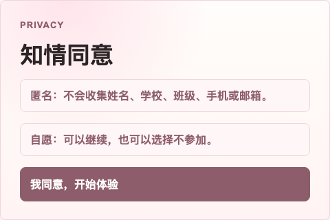
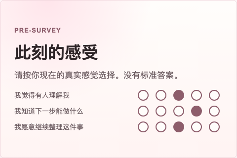
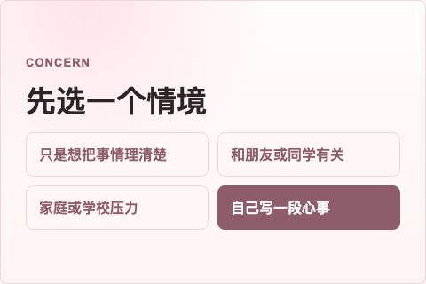
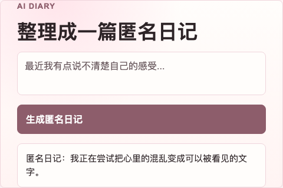
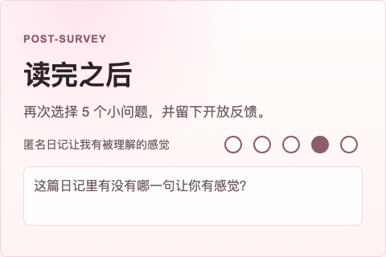
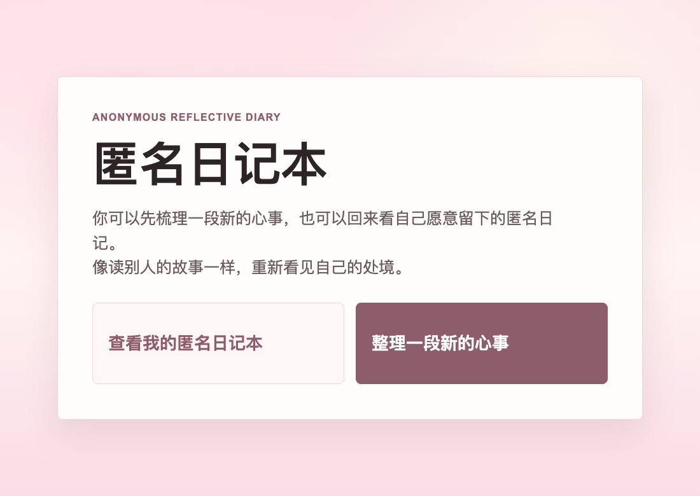

Value-Aligned AI Reflective Diaries
An anonymous web prototype for adolescent early emotional support
Prototype study
Ava Zhang
Anonymous · non-diagnostic · safer next step
Keywords: generative AI / adolescent support / privacy-first design / value alignment
AI can support, but it cannot pretend to be therapy.
Can a value-aligned AI reflective diary help students feel understood and identify one safer next step?
Why it matters
Many students are not ready to talk to a parent, teacher, or counselor, but may be willing to write anonymously first.
Safety boundary
No diagnosis, no identity labels, no identity prediction, no school/name collection, and no replacement for counseling.
Pre-test → AI diary → Post-test
The same five 1-5 items measured perceived support before and after the experience.
Consent and privacy

Five-item pre-survey

Select or enter a concern

Generate AI diary

Post-survey + feedback

From 44 records to the core sample
Formal release dataset
participant records
Core valid sample
pre-post + AI diary
Full feedback subset
complete open feedback
Analyzed high-school student records submitted after the final confirmed revision of the website. Core complete means pre-survey + post-survey + generated AI diary.
Core sample increased by +2.04 points
Core complete sample: N = 24. Total score range: 5-25.
Pre
Post
Direction
14 improved · 8 unchanged · 2 decreased
Open feedback subset
9 / 10 felt understood
Useful as early usability feedback, not proof of clinical effectiveness.
The product value is not therapy. It is lowering the first barrier to help-seeking.
A better route is B2B: schools, youth programs, and mental health education platforms.
Product position
Anonymous reflection + risk-aware language + resource navigation + escalation to human support when needed.
Honest limitation
Because this was a small convenience sample without a comparison/control condition, the results show promising feedback, not causal proof.
Built for return visits.
The next version turns one-time reflection into a calmer habit students can revisit.

Anonymous diary library
A directory page records saved anonymous diaries, so students can look back and notice patterns over time.
Bubble sound feedback
Soft bubble sounds make writing feel warmer, calmer, and less like a formal survey.
Online rollout
The next step is publishing the tool online for more high-school students to try.
Thank you.
Scan the QR code to try the anonymous diary website now.
www.ava-design.net

Open the prototype on your phone